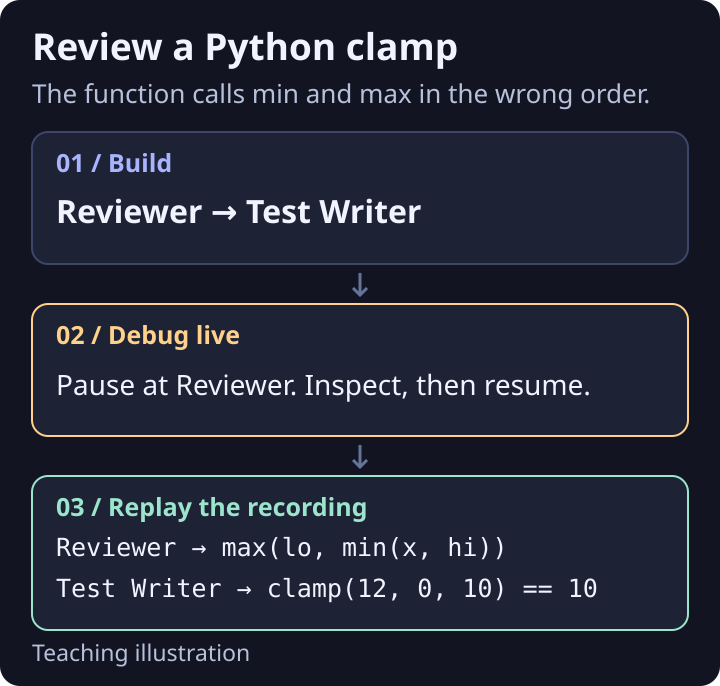
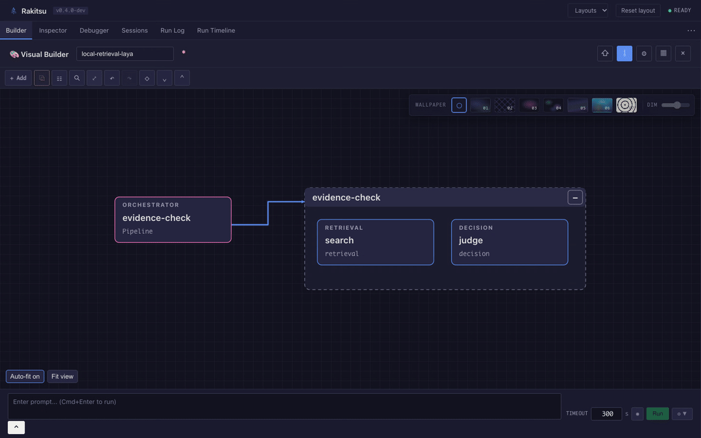
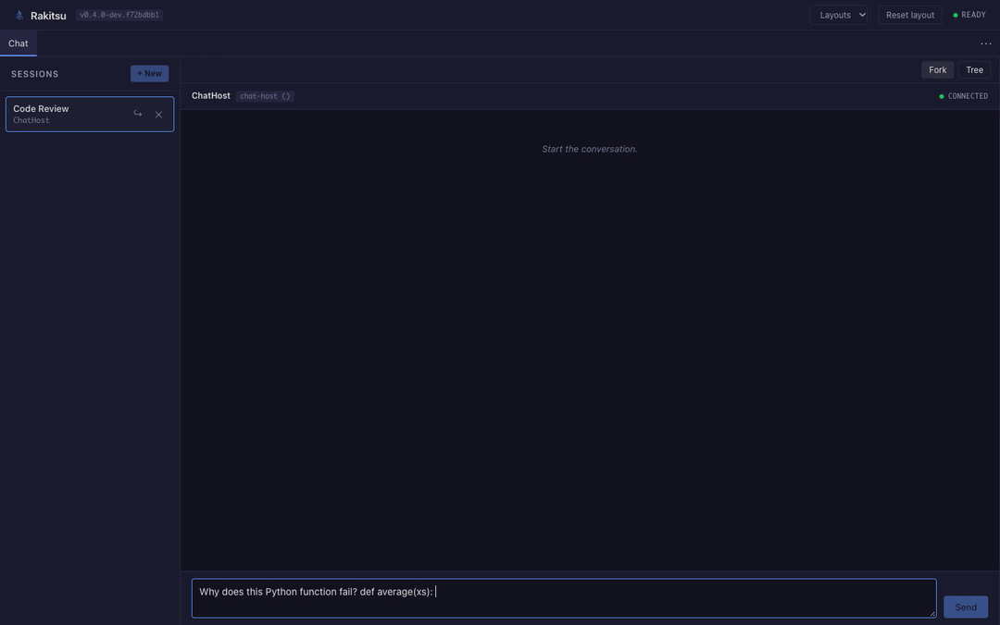
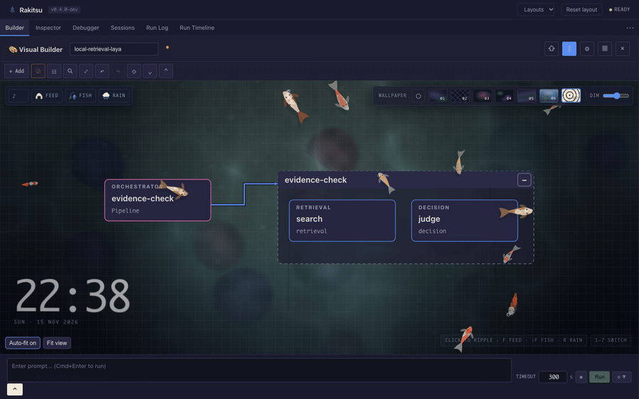
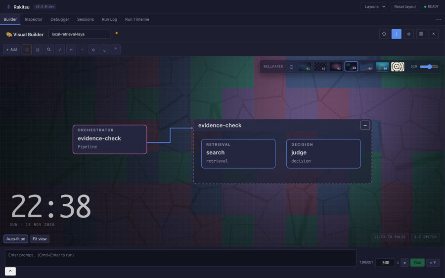
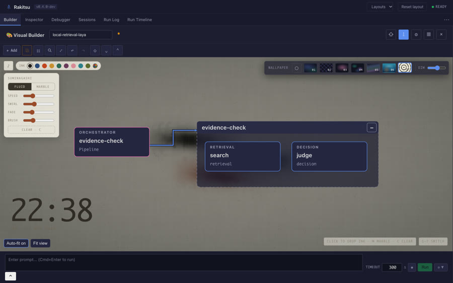

Rakitsu


The Agent IDE — Build, debug, and ship AI agents visually.
rakit (Indonesian: craft) + jiritsu (Japanese: autonomous) — "autonomous assembly"
Design multi-agent systems on a drag-and-drop canvas, debug with breakpoints and time-travel, deploy as a single zero-dependency binary. YAML-configured, multi-provider, open source.
0.4.0 development preview. The demos below were captured on the v0.4.0 milestone. The Quick Start installs the latest published release. To try the preview from this checkout, run
make build-embedded VERSION=v0.4.0-devand then./bin/rakitsu serve.

A Reviewer spots reversed min and max calls in a Python clamp. A Test
Writer suggests checking that clamp(12, 0, 10) returns 10. Follow the
example through a live breakpoint and the finished recording.
Follow the example workflow in the Web UI manual.
Quick Start
-
Install Rakitsu. On macOS or Linux, paste this into your terminal. On Windows, download the executable from the release page.
curl -fsSL https://raw.githubusercontent.com/SK-ENT/rakitsu/main/install.sh | sh -
Run
rakitsu quickstart. On Windows, open PowerShell in the download folder and run.\rakitsu-windows-amd64.exe quickstart. Choose Chat Bot and a provider you already use. Enter its API key if prompted, then follow the prompts to create your project. -
Choose Yes when asked to start the web UI. Open http://localhost:9100 if it doesn't open automatically, then start a chat.
The wizard creates the config for you. To use Rakitsu in an editor, see the Zed quick start.
rakitsu serve runs in the foreground and keeps that terminal busy — that's
expected, it's the server. Leave it running and open a new terminal tab
for anything else (editing files, running rakitsu run, etc). Ctrl+C stops it.
There are two ways to run an agent once serve is up:
- Click Run in the browser — the whole run happens inside the
serveprocess itself. No other terminal needed. rakitsu run config.yaml "query"from a second terminal — runs as its own CLI process and, ifserveis already running, shows up live as a card at http://localhost:9100 so you can watch it in the debugger.
Rakitsu doesn't run inference itself — you need access to a model, either your own Ollama running locally or an API key for OpenAI, Anthropic, Gemini, or a LiteLLM proxy.
No API key? Click Run the Demo on the welcome screen and pick Ollama —
still needs a local Ollama install with a model pulled (ollama pull llama3.2), just no cloud key. It's a pre-wired run with breakpoints
already set, so you can see the visual builder and live debugger in action
before writing a config.
macOS: release binaries aren't notarized yet, so Gatekeeper can silently kill a freshly downloaded
rakitsuon first run (no dialog, just "killed"). If that happens:xattr -cr $(command -v rakitsu), and if it's still killed,sudo spctl --add $(command -v rakitsu)or System Settings → Privacy & Security → Open Anyway.
Other ways to install
For v0.3.2, use install.sh or the stable release downloads. The Homebrew formula currently pins v0.3.0-alpha.14.
# Homebrew (macOS / Linux) — the formula lives in this repo
brew tap sk-ent/rakitsu https://github.com/SK-ENT/rakitsu
brew install sk-ent/rakitsu/rakitsu
# Docker (linux/amd64, linux/arm64) — use the exact release tag
docker run --rm ghcr.io/sk-ent/rakitsu:v0.3.2 version
docker run --rm -it -e OPENAI_API_KEY -v "$PWD:/workspace" \
ghcr.io/sk-ent/rakitsu:v0.3.2 run config.yaml "your query"
To expose the API from Docker, serve must bind 0.0.0.0 inside the
container, which it only allows with an API token set. Publish the port on
localhost only:
docker run --rm -e RAKITSU_API_TOKEN=<token> -p 127.0.0.1:9100:9100 ghcr.io/sk-ent/rakitsu:v0.3.2 serve --host 0.0.0.0.
For local visual inspection, run rakitsu serve on loopback outside the container. See server authentication for API access.
Inside the container, a cli tool's sandbox: docker needs the host Docker
socket mounted, which gives the container root on your machine. The default
local_restricted sandbox works without it.
See it run
Debug. A live code review pauses before an agent thought. Inspect the graph and Run Log, then use Resume to continue execution.

A local code review pauses at an agent breakpoint and resumes in the Debug layout.
Builder. Open + Add to create nodes, or use the Import icon to load a pipeline. The demo switches to the SVG workbench and folds a pipeline with local Retrieval and Decision steps. This separate pipeline runs without agents.

Chat. A local Ollama model explains a bug in a short Python function.

The full walkthrough covers Builder, a live breakpoint, and recorded playback. Watch the MP4 walkthrough or open the Web UI manual.
Why Rakitsu?
- Visual-first: Design agents on a drag-and-drop canvas, not in code
- Debug like software: Breakpoints, pause, inspect reasoning mid-execution
- Single binary: One file, zero dependencies — download and run
- YAML-configured: Declarative configs, no framework code to write
- Multi-provider: Mix OpenAI, Anthropic, Gemini, Ollama per-agent in one config
Features
Visual Builder
- Add nodes and groups with + Add, then drag and wire them on the canvas
- Use compact icon controls in docked layouts. Run and Debug stay labeled
- Switch to SVG workbench preview for orthogonal wiring and an alternate canvas
- Add Decision for typed model answers or Retrieval for local document search
- Inherit/override: group defines defaults, agents override, with badges
- Canvas search, auto-arrange, hierarchy panel
Runtime Debugger
- Set breakpoints on any agent or tool node
- Pause mid-execution, inspect reasoning, override parameters, resume
- 4 visualization modes: Tree, Block Diagram, Timeline, Mind Map
- Dock Builder, Debugger, Run Log, and Run Timeline together with Layouts → Debug
- Use Layouts → Replay to scrub recorded runs and follow the graph and log together
Agent Engine
- ReAct loop with reflection and ground-checking
- Orchestration strategies: ReAct, Pipeline (with Sequential/Parallel/DAG step shapes); Hierarchical and Plan-and-Execute currently route through ReAct, not distinct implementations
- Pipeline checkpoint and resume
- Token budget enforcement, cost tracking, context auto-compression
Providers
- OpenAI, Anthropic Claude, Google Gemini, Ollama, LiteLLM
- Mix providers per-agent in a single config
- Auto-discover models from any OpenAI-compatible endpoint
Runtime portability (optional)
- Primary runtime is the Rakitsu binary; for teams shipping to alternative runtimes, configs export via the
RuntimeTargetinterface - Built-in formats: NemoClaw, OpenClaw — see Export Verification
Operations
- Session history with replay and rerun
- CLI and web UI modes
- Secure tools: CLI whitelist/blocklist, file path restrictions, Docker sandbox
- Release binaries: Linux and macOS (amd64 + arm64), Windows (amd64)
Protocol interop
rakitsu acp— run as an ACP (Agent Client Protocol) server so editors like Zed can talk to rakitsu agents directlyrakitsu acpreads one JSON-RPC message per line, capped at 16 MiB per linerakitsu acpkeeps at most--max-sessionssessions (default 256) and drops one unused for--session-idle-timeout(default 24h); a session with a running prompt is never droppedrakitsu serve --config tools.yaml --mcp-port 9200exposes an MCP server athttp://localhost:9200/mcpon a separate listener (legacy era, ≤2025-11-25 revision) so external MCP clients can discover and call rakitsu's toolsrakitsu serve --config team.yamlreloads the A2A config and sibling skills for each new task. Other discovered configs are addressable at/a2a/{config-id}with cards at/.well-known/agent-card.json/{config-id}; an optional MCP listener refreshes its tool registry when tool definitions change. Adding or editing agent configs no longer requires restarting the service- Tool types
mcp_server,a2a, andjevlet a rakitsu agent call out to other MCP servers, A2A agents, or TypeSafe AI's Jev model for typed yes/no, pick-one, or scored questions
Long-running monitors
Experimental. A chat session can wake itself on a timer (settings.wake), check something, and stay quiet unless it matters. rakitsu serve --config monitor.yaml can start such sessions itself from a monitors: block, so a supervisor (Docker, systemd, launchd) only has to restart one process.
GET /healthzreturns 200 when every monitor is healthy, 503 otherwise.rakitsu healthcheckwraps it for Docker.- Status and control:
GET /api/chat/{id}/wake/status,POST .../wake/stop,POST .../wake/resume, the/wakeslash command, and a status card in the web UI. - Alerts go out through server-side sinks (webhook, ntfy) with a host allow-list; the agent only queues a message with the
send_alerttool. - Status: the timer logic is tested with a fake clock. A live multi-day run is in progress and not yet proven.
Details: docs/wake-timer.md, docs/monitor-autostart.md, deployment files in deploy/monitor/.
Wallpapers
Something to watch while an agent thinks. The Builder canvas can run an animated shader behind your agents: seven presets, off by default, picked in the Settings panel.
One of the presets, Water Ripple, is a koi pond. Press F to drop food and the koi show up. Press Shift+F to fish them instead (they forgive you, they're pixels). R makes it rain. The clip below shows Water Ripple on the Builder canvas.

Why is there a koi pond in an agent IDE?
I was debugging something ugly at 11pm, doing the classic dev thing: staring at a spinner like it owes me money. My daughter walked by, looked at my screen, and said: "you're always stressed when you do this. Why don't you just... put koi on it? Something nice to look at while it thinks."
A child roasted my life choices and fixed my UX in one sentence.
The other six:
 Circuit Flow |
 Plasma Lattice |
 Volumetric Fog |
 Voronoi Cells |
 Aurora Waves |
 Suminagashi |
CLI
rakitsu quickstart # Interactive project wizard
rakitsu serve # Web UI + agent runner
rakitsu serve --config tools.yaml --mcp-port 9200 # A2A on 9100; MCP at localhost:9200/mcp
rakitsu run config.yaml "query" # Run agents from CLI
rakitsu acp # Run as an ACP server (editor integration, e.g. Zed)
rakitsu scaffold code-review # Generate config from template
rakitsu sessions # Browse past runs
rakitsu doctor config.yaml # Diagnose config + provider health before running
rakitsu healthcheck # Probe a running `serve` at /healthz (exit 0 = healthy)
# Override provider/model at runtime (no config edits needed):
rakitsu run config.yaml "query" --provider openai --model gpt-5.6-luna
rakitsu run config.yaml "query" --provider ollama --model llama3
Example Config
name: Code Reviewer
settings:
default_provider: openai
providers:
openai:
type: openai
api_key: ${OPENAI_API_KEY}
reasoning_effort: none
defaults:
model: gpt-5.6-luna
tools:
- name: read_file
type: fs
operation: read
agents:
- name: Reviewer
role: worker
provider: openai
model: gpt-5.4
system_prompt: Review code for bugs, security issues, and best practices.
tools: [read_file]
orchestrator:
name: Lead
strategy: Pipeline
agents: [Reviewer]
pipeline:
steps:
- name: review
agent: Reviewer
task: Review the supplied query.
Optional settings blocks:
settings:
spawn: # runtime subagent fan-out (spawn_agent tool)
enabled: true
max_concurrent: 3 # run-global cap on concurrent children (default 4)
max_depth: 1 # children cannot spawn further (default)
timeout_seconds: 300
With settings.spawn.enabled, every agent (and the interactive chat host) gets a spawn_agent tool: it can spawn parallel subagents at runtime — ad-hoc workers or clones of config-defined agents — each with its own timeout, streamed into the same trace/debugger with explicit parent links. See examples/single/10-spawn-fanout/.
See examples/ for chat bots, dev teams, pipelines, RAG assistants, and more.
Export Verification
Rakitsu's RuntimeTarget exports are verified end-to-end against real infrastructure — not claims, real HTTP traces. The current implementations cover OpenClaw and NVIDIA NemoClaw; the table below shows what each was tested against.
What's Verified
| Component | Runtime Tested Against | Result |
|---|---|---|
openclaw.json |
ghcr.io/openclaw/openclaw:latest (Docker) |
Gateway started with Rakitsu-generated config |
sandbox-policy.yaml |
NVIDIA OpenShell on DGX Spark (aarch64) | Policy version 2 loaded (active) |
| Full NemoClaw sandbox | NemoClaw CLI in docker-in-docker, sandbox created with Landlock+seccomp+netns | Policy version 6 loaded (active) |
| End-to-end inference | NemoClaw sandbox → egress proxy → DGX Spark Nemotron-30B | HTTP 200 chat completion |
E2E Test Setup
docker:dind (local host)
└── NemoClaw CLI + OpenShell gateway (k3s-in-Docker)
└── Sandbox "my-assistant" (Landlock + seccomp + netns)
└── OpenClaw agent
└── Rakitsu-exported openclaw.json ←── our export
└── Rakitsu-exported sandbox-policy ←── our export
└── HTTP request to DGX Spark (via egress proxy)
└── LiteLLM → vLLM → Nemotron-30B
└── HTTP 200 chat completion ✓
All files destroyed with docker rm -f after verification — no residual state. The heavy E2E test is manual only; unit regression tests guard the export schema (binary allowlist, port extraction, env var expansion) and run on every CI build.
See docs/EXPORT-VERIFICATION.md for the full audit trail.
Build from Source
git clone https://github.com/SK-ENT/rakitsu.git
cd rakitsu
make build-embedded # frontend + Go binary → bin/rakitsu
./bin/rakitsu serve
Requires: Go 1.26+, Node.js 20.19+ or 22.12+
Project Structure
cmd/rakitsu/ CLI entry points (Cobra)
internal/agent/ ReAct loop, orchestrator, pipeline executor
internal/llm/ LLM provider interface + implementations
internal/tools/ Tool interface: cli/, fs/, mcp/, a2a/, memory/, alert/
internal/wake/ Wake timer engine (checks, rules, tasks)
internal/alert/ Alert sinks (webhook, ntfy) with redaction and rate cap
internal/server/ SSE hub, agent runner, config store
internal/debug/ Debug controller, replay, breakpoints
internal/store/ Session persistence (JSONL, one file per session)
web/src/ Vue 3 + Vue Flow frontend
examples/ Ready-to-run YAML configs
Troubleshooting
"openai API key not set" — Export your key before running:
export OPENAI_API_KEY=sk-...
"cannot load config: no such file or directory" — Check the config path. Try ls examples/single/ to see available configs.
"cannot create provider for agent …" — An agent references a provider that isn't defined. Add it under settings.providers in your config, and make sure the agent's provider: field matches the provider name exactly.
"is port 9100 already in use?" — Another rakitsu serve may be running. Kill it or use a different port:
rakitsu serve --port 8080
Running more than one instance — Give each instance its own session directory and memory directory, via --sessions-dir PATH (on serve, run, sessions) or settings.sessions_dir, plus settings.memory.dir. Never share one directory between running instances: the sessions.json index is not safe for several writers. Default is ~/.rakitsu/sessions. run --hub URL selects only the live event destination; it does not inherit that server's history directory. Configure run and serve history explicitly; live visibility does not guarantee saved-history visibility. Details: docs/configuration.md.
Agent runs but produces no output — Check --trace for execution details:
rakitsu run config.yaml "query" --trace --verbose
Run stops too early, or runs too long — By default there is no time limit, and agents without max_iterations have no iteration cap: a run ends on its answer, a budget (max_cost / max_total_tokens), --idle-timeout, or Ctrl+C. Set a limit with --timeout (seconds; per turn in --interactive):
rakitsu run config.yaml "query" --timeout 600
Output starts with [REASONING-ONLY OUTPUT — …] — The model (typically nemotron, DeepSeek-R1, QwQ) consumed its max_tokens budget on chain-of-thought before emitting any user-facing answer. Three production-ready alternatives are documented in docs/providers/reasoning-models.md: keep the default and rely on extraction, swap synthesis to Gemini, or run hybrid (local workers + cloud synthesis).
Origin
Rakitsu began in spring 2026 as a small project to support my son. It was supposed to stay small — it didn't. The problem turned out to be genuinely interesting, and it grew into serious, long-term work. It remains a family project at heart.
Rakitsu is built openly with AI: it is co-developed by a human and AI coding
assistants. Design decisions, code review, and final verification are human;
a large share of the implementation is AI-assisted. See
AI_USE_NOTICE.md for how AI tooling relates to the
license.
Disclaimer
Rakitsu is in preview. Individual releases may be labeled alpha, beta, or stable. Interfaces, APIs, and behavior may change without notice. Rakitsu executes LLM-generated tool calls (shell commands, file operations) which carry inherent risk. Use at your own risk. The authors assume no liability for any losses, damages, or consequences arising from use of this software. See LICENSE for full terms.
License
BSL 1.1 — See LICENSE for details. Converts to Apache 2.0 after 4 years.
AI tooling: see AI_USE_NOTICE.md. Reading and personal study with AI tools is fine; AI-accelerated competitive reimplementation is subject to the BSL non-compete clause.